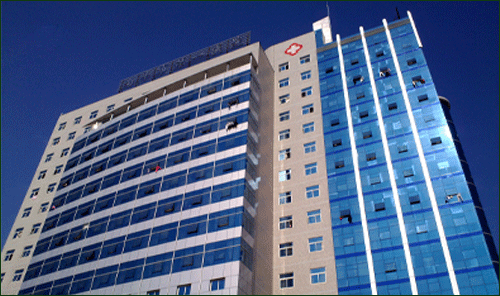

企业简介
发展历程
展望未来

西安怡康医药有限责任公司成立于2001年，目前拥有全资及控股公司14家，全省连锁葯店1100余家，
经营范围涵盖化学药制剂、抗生素、生化药品、生物制品、中成药、中药饮片、中药材、医疗器械、保健品、
消毒用品等，经营品规10000多种。药品配送覆盖全省85%以上的地区，约107个县，企业员工7000余人，年度总销售额可达
60亿元，位于中国医药连锁排名前11强。
企业集团以医药经营为核心，业务覆盖了医药零售批发、医药物流、医药电商三大业务板块。批发销售网络覆盖省内各地
市级医院及部队医院；市、县、乡镇，配送区域至：延安宝塔区、延长县、延川县、渭南市富平县、安康市汉滨区、西安
市周至县、雁塔区等范围，并于2014年9月份成功入围宝鸡市高新区、扶风县、凤县“三统一”中标药品配送。经由2016年
整合统计，陕西怡康医药现配送网络已覆盖各区县级及基层医疗机构，配送医疗机构约7000家，覆盖率100%，药品配送率
达95%以上，累计销售逐年递增；公司配送中心库房总面积11000平方米，库房总面积11000平米，库存品规10000多个，
拥有配送车辆近50辆，冷链车20辆。广阔的网络体系和信息化、自动化的运营体系，科学、合理、严谨、高效的管理模式，
以KSOA企业信息融通平台、WMS仓储管理、协同商务、U890用友财务、GPS定位系统、HR人力资源软件等现代化管理体系为
业务、仓储、上下游客户、财务，物流、人力六大系统服务，使管理更加流程化、科学化。2016年集团公司特斥资近2亿
元倾力打造了总建筑面积5万余平米的“怡康医药集团物流中心”，集办公、物流配送及生活服务为一体，并完全按照新
版GSP要求配备完善的温湿度、自动监控等基础设施，严格保证了药品存储环境；先进的电子分拣系统，大大提高了复核
分拣效率，堪称现代医药企业办公中心典范；2014年开始布局医药电商。2015年7月7日“怡康到家”APP正式上线，标志着
怡康医药从传统医药零售，迈入了以怡康到家自有平台和天猫、京东、百度等第三方平台相结合的全方位立体化销售模式。
2017年3月开始，正式启动IPO上市计划！